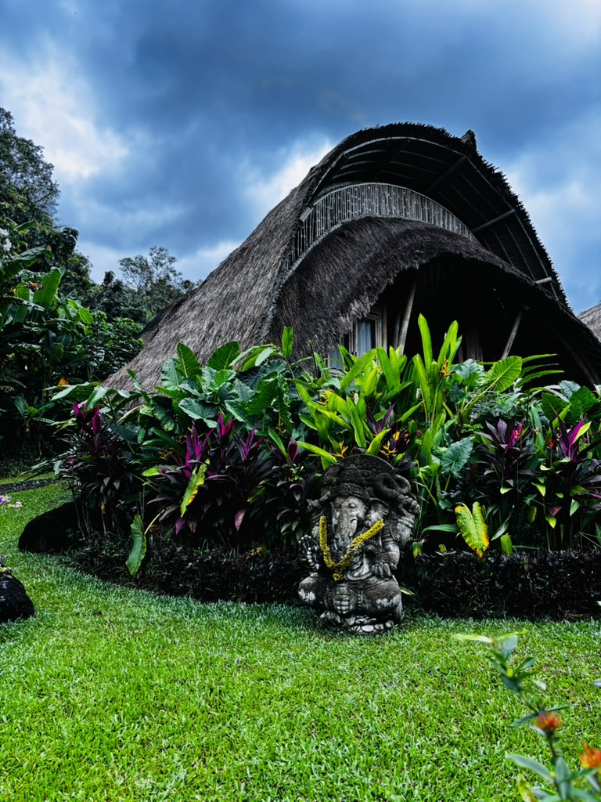
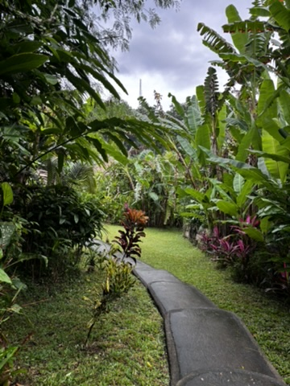
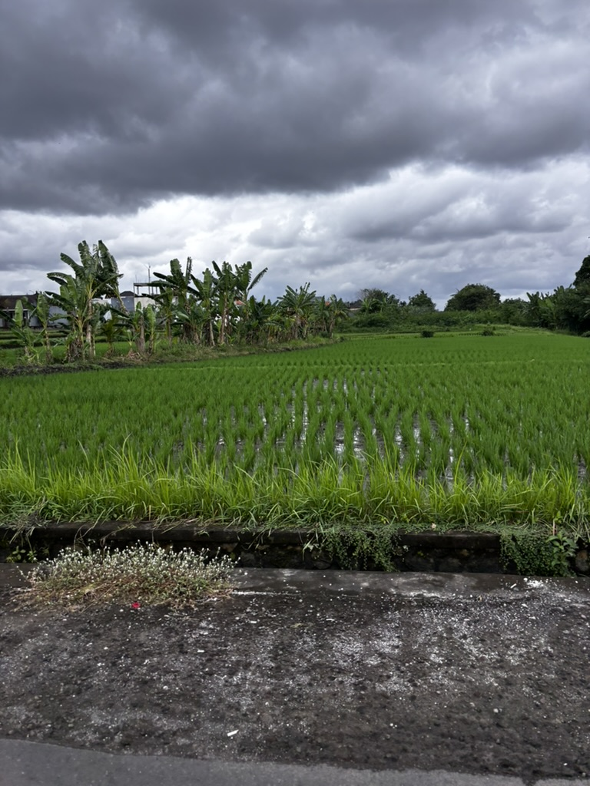
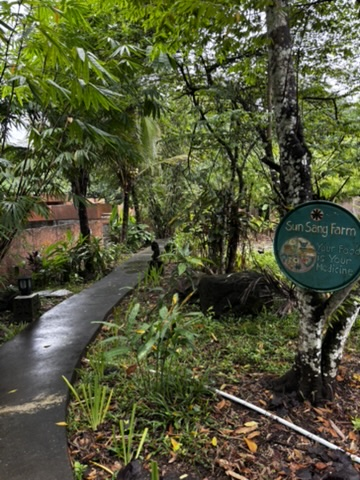
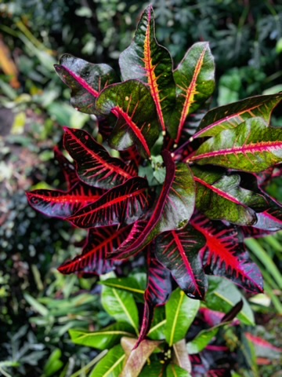

Everyone has a version of Bali they're looking for. The party version, the yoga version, the rice-field-Instagram version, the digital nomad coworking version. Bali accommodates all of them, sometimes in the same street. What I didn't expect was how completely the island delivers its beauty in the quieter moments between all of those — in gardens, in fields, in a flower that someone placed on a step before dawn.
The resorts and what they do with flowers
Balinese resort culture has a particular relationship with flowers. They are not decoration — or they are not only decoration. In Bali, flowers are part of the offering practice, the daily canang sari that gets placed on every threshold, at every temple, at the base of every statue. The resorts have absorbed this and amplified it so that everywhere you look there is something blooming, something placed, something tended to with deliberate care.

Unlocking new flowers, every morning. Bali offers a continuous inventory of things that are beautiful.

The architecture here earns the flowers. Stone and water and something designed to feel like it belongs in the landscape.
The rice fields
The rice terraces of Bali are one of those things that photographs everywhere and still, somehow, surprises you when you're standing in front of them. The green is not a colour you see much in nature — it is too saturated, too even, too arranged. It looks computer-generated until you're close enough to see the irrigation channels and the frogs and the actual human work that maintains this landscape. The Subak irrigation system is UNESCO-listed for a reason: it is sophisticated, ancient, and still entirely functional.

The rice fields. Too green to be believable. Completely real. Maintained by a system older than most countries.
I walked along the edge of a terrace in the early morning when the mist was still in the valley. A farmer was already working. Two ducks. A dog sleeping on a path that probably leads somewhere important. The whole scene had the quality of something that has been exactly like this for a very long time and doesn't need to change.
What the resorts also offer
I'm generally not a resort person — I find them too sealed-off, too separated from wherever you actually are. But in Bali the good ones manage to be both contained and genuinely Balinese. The pools are designed around the landscape, not over it. The gardens are tended in the Balinese way. The staff bring offerings in the morning. You feel like you're in Bali, not just near it.

The pool reflects the sky and the palms and the stone. Someone thought about this carefully.

Stone and green and the sense that this place is paying attention to something the rest of the world has mostly forgotten.
I spent a morning just walking the grounds, no destination, no photography agenda. Noticed things: a spider web catching light between two flowers. A carved stone face covered in moss and looking completely unbothered by it. A small bowl of offerings placed on a step with the kind of attention that is also a kind of prayer. Bali does this to you if you give it time — it makes you notice things at a smaller scale, and it turns out the small scale is where it keeps its best work.